Rouse Operating Manual
The connected bedside alarm clock
For Rouse firmware 1.0.0 · November 2026
Contents
Meet Rouse
Rouse is a bedside alarm clock with a touch screen and its own web page. Day to day, you use it like any alarm clock: glance at the time, tap the screen, snooze in the morning. For everything else (setting alarms, choosing a look, adding photos and sounds) you use the clock’s web page on your phone, tablet or computer. There is no app to install and no account to create.
Rouse can:
- Wake you with up to 10 alarms, each with its own days, sound, volume and snooze.
- Wake you gently: the volume can rise slowly and the screen can brighten like a sunrise before the alarm.
- Wake you firmly: Extra loud is there for heavy sleepers.
- Show the weather, the date and your next alarm.
- Dim itself and switch to a night theme while you sleep.
- Show your own photos, one at a time or as a slideshow.
- Play sleep sounds (white noise, rain, ocean waves and others) with a sleep timer.
- Keep time through a power outage on its backup battery (if your clock has one).
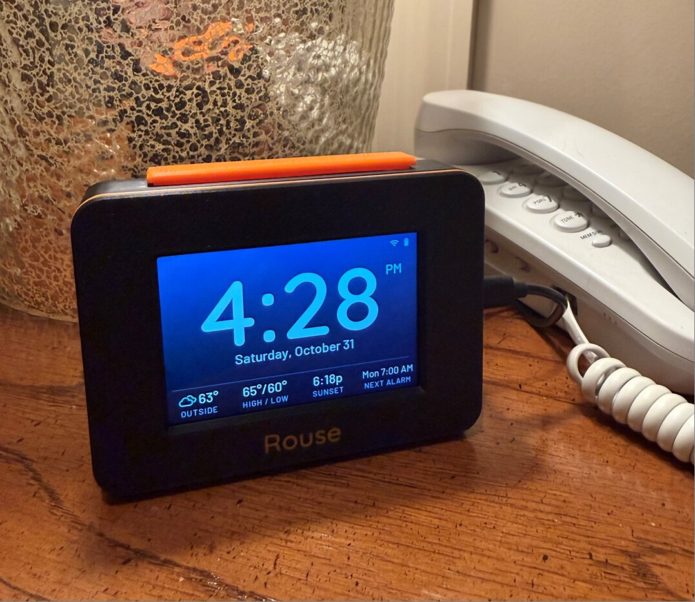
The parts of the clock
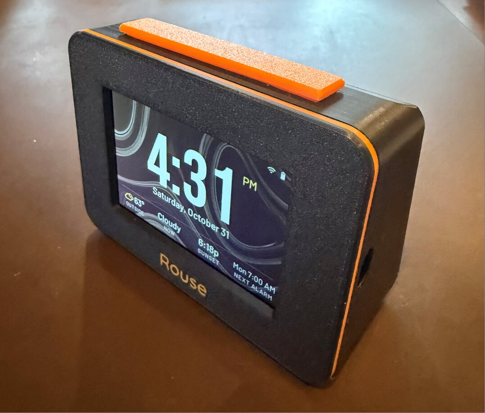
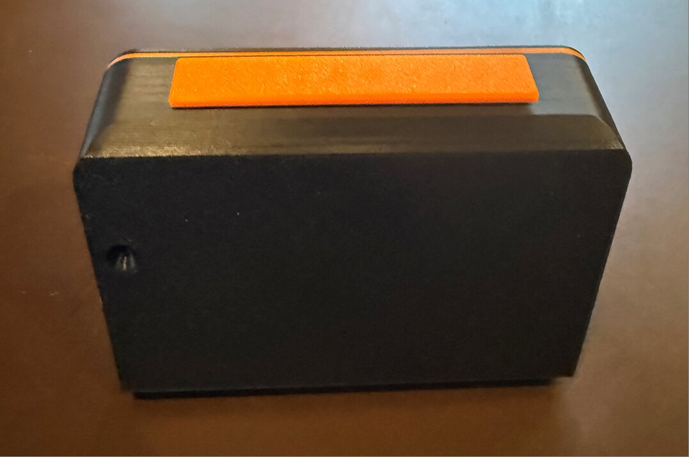
- Screen. The time and everything else. Tap it to open the menu.
- Snooze bar (on top, if your clock has one). Press it to snooze, hold it to stop the alarm. Clocks without a snooze bar use the Snooze button on the screen instead. On the Waveshare, you can simply tap the case (see Tapping the case).
- USB-C port (right side). Power. Any USB phone charger works.
- Speaker (underneath). Sound comes out through the grille in the base.
- RESET hole (back). A paperclip pressed gently into it restarts the clock. You will rarely need it.
- Stylus holder (some cases). Holds the stylus for clocks with a pressure-sensitive (resistive) screen.
Three kinds of Rouse. Rouse runs on three different display boards. They work the same way, with a few small differences, which this manual points out where they matter. To see which one you have, open the web page and look at Settings → Status → Board:
- CYD (ESP32 3.5” display, E32R35T). Pressure-sensitive touch screen; a stylus works best. Holds up to 3 photos.
- Freenove (FNK0104N). Glass touch screen like a phone’s; use your finger. Holds up to 64 photos.
- Waveshare (ESP32-S3-Touch-LCD-3.5). Glass touch screen; use your finger. Holds up to 64 photos.
First setup
1. Plug it in
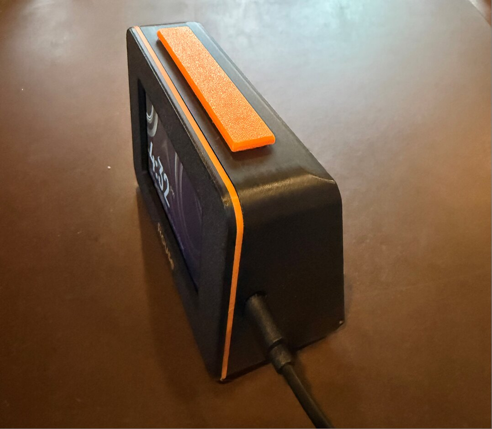
Connect the clock to a USB charger with a USB-C cable. The screen lights up within a few seconds. A brand-new clock (or one that has forgotten its WiFi) shows WiFi setup instructions.
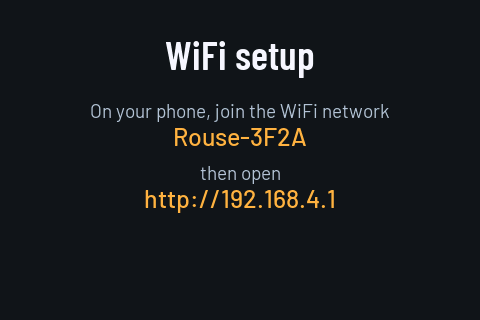
2. Connect it to your WiFi
- On your phone, open the WiFi settings and join the network the clock shows, named Rouse- followed by four characters (for example Rouse-3F2A). It has no password.
- A setup page usually opens by itself. If it doesn’t, open a web browser and go to http://192.168.4.1.
- Pick your home WiFi network from the list, type its password and tap Join network.
- The clock connects, shows the time, and turns off its setup network about a minute later.
- Reconnect your phone to your home WiFi.
Rouse uses 2.4 GHz WiFi, which almost every home router provides. If your router uses separate names for 2.4 GHz and 5 GHz, pick the 2.4 GHz one.
3. Open the clock’s web page
On any phone, tablet or computer on your home WiFi, open a browser and go to:
http://rouse.local
The address is also shown at the bottom of the clock’s menu (tap the clock screen once). If rouse.local doesn’t open, type the number address shown there instead, for example http://192.168.1.40.
Add it to your home screen. On an iPhone or iPad, tap the Share button and choose Add to Home Screen. On Android, open the browser menu and choose Add to Home screen or Install. You get a Rouse icon that opens the clock’s page like an app.
More than one Rouse? The first clock on your network takes the name rouse.local; the next ones take rouse-2.local, rouse-3.local and so on. You can give each one a friendlier name in Settings → Network → Clock name, for example rouse-bedroom.
4. Set your location and first alarm
- In the web page, open Settings. Under Time, check the time zone. Under Weather, search for your town so the clock can show the weather.
- Open Alarms, tap + Add alarm, set the time and days, and tap Save.
That’s it. The rest of this manual covers everything else you can do.
Everyday use
The clock screen
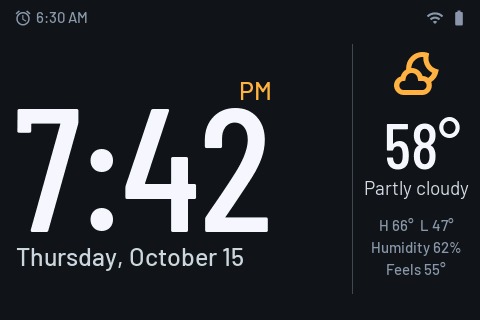
Depending on the theme and layout you choose, the clock screen can show the time, the date, the weather, your next alarm, and small WiFi and battery icons.
When an alarm rings
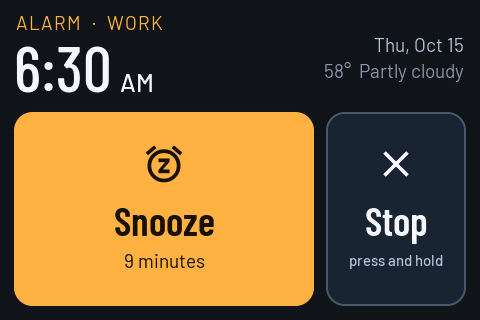
- Snooze: tap Snooze, press the snooze bar, or (Waveshare) tap the case once. The alarm rings again after the snooze time (9 minutes unless you change it).
- Stop: press and hold Stop for one second (a ring fills as you hold), hold the snooze bar down for about 1½ seconds, or (Waveshare) tap the case twice quickly. Holding prevents stopping an alarm by accident while half asleep. If you prefer a single tap, turn off Settings → Alarm behavior → Press and hold to stop.
- An alarm nobody stops turns itself off after 15 minutes (you can change this).
- While snoozing, the clock screen shows when the alarm will ring again. To cancel the snooze, open the menu and tap Cancel snooze, hold the snooze bar, or (Waveshare) tap the case twice quickly.
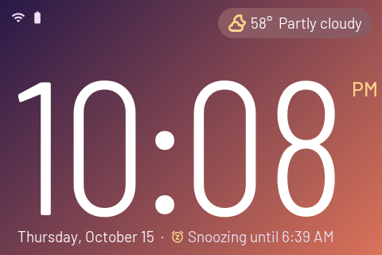
The snooze bar
If your clock has a snooze bar:
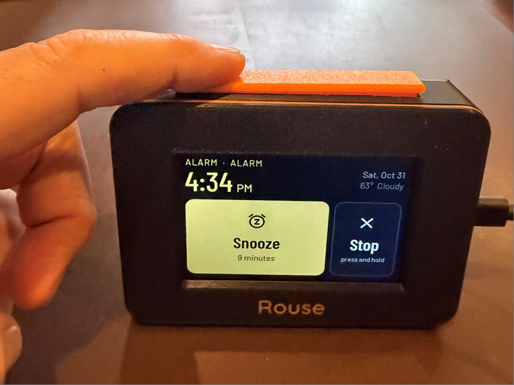
| When | Press | Hold (1½ s) |
|---|---|---|
| An alarm is ringing | Snooze (or stop, if snooze is off for that alarm) | Stop the alarm |
| Snoozing | Light up the screen | Cancel the snooze |
| A sleep sound is playing | Stop the sound | |
| At night | Light up the screen for a few seconds | |
| The menu is open | Close the menu |
Tapping the case
The Waveshare board has a motion sensor, so a Waveshare clock needs no snooze bar: while an alarm rings, tap anywhere on the case.
| When | One tap | Two quick taps |
|---|---|---|
| An alarm is ringing | Snooze | Stop the alarm |
| Snoozing | (nothing) | Cancel the snooze |
- Tap firmly with a fingertip, like knocking on a door. For two taps, make them about the same strength, a quarter of a second apart.
- After one tap the clock waits a moment (under a second) to see whether a second tap follows, then snoozes.
- Taps only do something while an alarm is ringing or snoozing. At other times they’re ignored, so bumping the nightstand does nothing.
- A hard bump of the nightstand can count as a tap. That can snooze the alarm, but never stop it: stopping always takes two taps.
- Turn it on or off, and choose how hard a tap must be, in Settings → Hardware (see Hardware). It’s on, at Normal tap, on a new Waveshare clock.
Night mode
Night mode dims the screen and switches to a dark night theme on a schedule (from 10:00 PM to 6:30 AM unless you change it). At night:
- Tap the screen to brighten it for a few seconds (10 unless you change it). Tap again while it’s bright to open the menu.
- When an alarm rings, the screen brightens so you can see it.
- If an alarm uses the sunrise light, the screen starts brightening before it rings and switches back to your day theme.
To change the schedule, the night theme or the night brightness, use Settings → Day and night. To switch night mode on or off right now, use the menu on the clock, or Settings → Day and night → Right now.
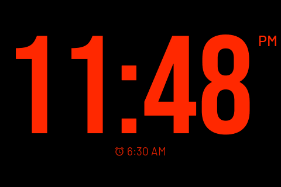
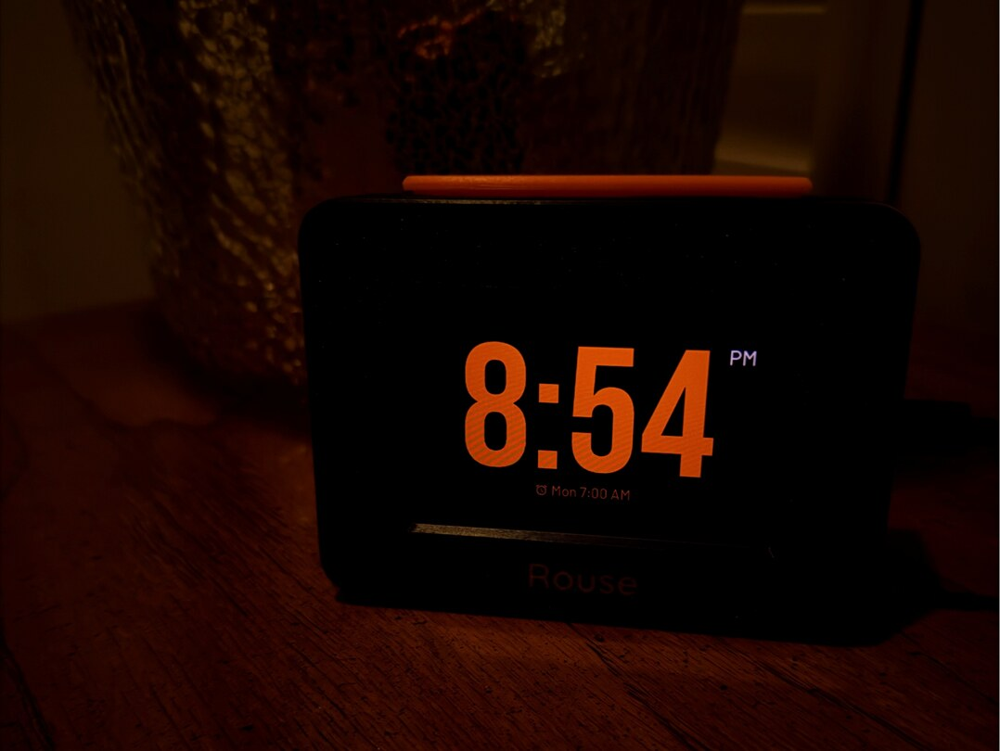
How dark the night screen can get depends on the board. The Freenove and Waveshare screens get much darker than the CYD’s, so you can use a slightly higher night brightness for easier reading without lighting up the room.
The web page
The web page has four tabs (Display, Alarms, Sounds and Settings) plus Clock, which shows a live view of the clock screen. Changes save to the clock as you make them; there is no Save button except in the alarm editor.
If your clock has a PIN (see Web page PIN), the page asks for it the first time you open it in a browser.
Alarms
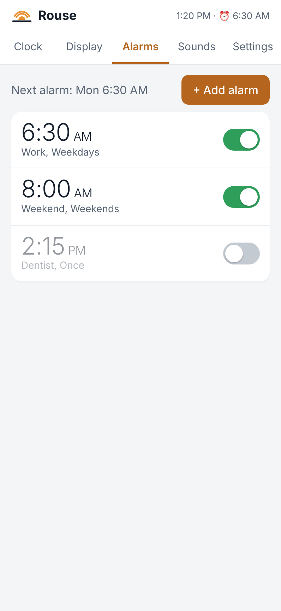
The Alarms tab lists your alarms with the next one at the top. Use the switch beside an alarm to turn it on or off, or tap the alarm to edit it. You can have up to 10.
Adding or editing an alarm
Tap + Add alarm, or tap an existing alarm. When you’re done, tap Save.
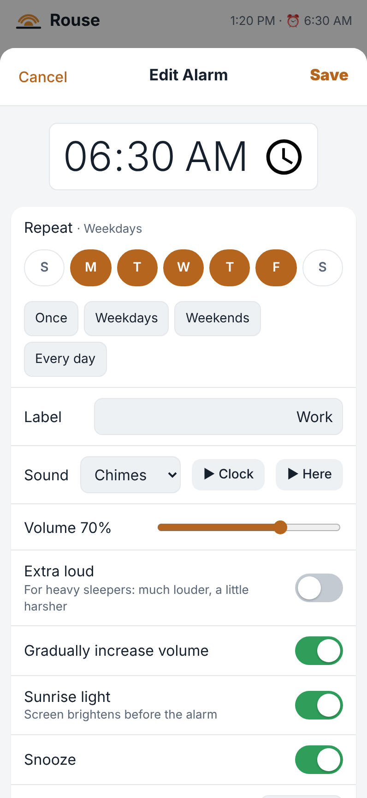
- Time. Tap the time to change it.
- Repeat. Tap the days it should ring, or use Once, Weekdays, Weekends or Every day. A Once alarm turns itself off after it rings.
- Label. A name shown on the clock when it rings, for example Work.
- Sound. Pick a built-in sound or one of your own. ▶ Clock plays it on the clock; ▶ Here plays it on your phone.
- Volume. How loud the alarm gets.
- Extra loud. For heavy sleepers: much louder, a little harsher. Try it with ▶ Clock before relying on it.
- Gradually increase volume. Starts quietly and rises to the full volume over about 30 seconds.
- Sunrise light. The screen slowly brightens before the alarm, like dawn (starting 15 minutes before unless you change it in Settings → Alarm behavior).
- Snooze and Snooze length. Whether this alarm can be snoozed, and for how long.
- Skip next alarm. Skips just the next time it would ring (a holiday, say), then carries on as normal.
- Ring it now (test) rings the alarm right away so you can check it. Delete Alarm removes it.
Alarm behavior
Settings → Alarm behavior sets how every alarm behaves:
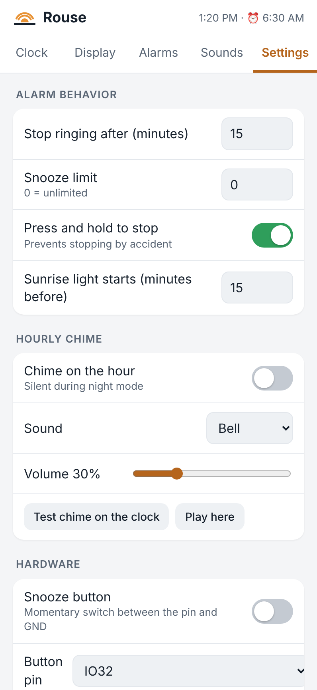
- Stop ringing after. An alarm nobody stops goes quiet after this many minutes.
- Snooze limit. How many times an alarm can be snoozed (0 = no limit).
- Press and hold to stop. Stopping needs a one-second hold, so you can’t stop it by accident.
- Sunrise light starts. How many minutes before the alarm the screen starts to brighten.
Display and themes
A theme is the look of the clock screen: its layout, time font, colors and background. Rouse comes with seven themes. You can change them, make copies, and create your own. One theme is used by day and one at night.
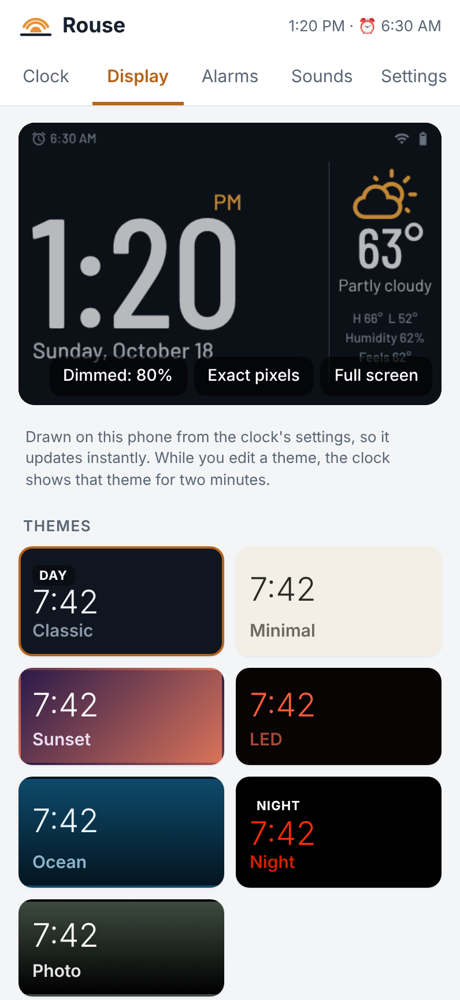
The preview
The picture at the top of Display shows what the clock is showing right now. It is drawn on your phone, so it updates instantly as you edit.
- Dimmed: 80% shows the preview at the clock’s current brightness. Tap it to switch to Full bright, which is easier to see while you choose colors.
- Exact pixels fetches the real screen from the clock, pixel for pixel.
- Full screen shows a bigger preview. Turn your phone sideways for the biggest view.
Choosing and editing themes
Tap a theme to edit it. While you edit, the clock shows that theme for two minutes, then goes back to normal. To use a theme, choose Use as: Day theme or Night theme at the top of the editor.
- Duplicate theme makes a copy of the theme you are editing. This is also how you make a new theme (see below). Up to 10 themes.
- Delete theme removes the theme you are editing.
- Restore built-in themes puts back the original seven (and removes your own).
Making your own theme
New themes always start as a copy of an existing one:
- Tap the theme that’s closest to what you want.
- Tap Duplicate theme. The copy appears at the end of the list, named after the original with “copy” added, and opens in the editor.
- Give it a Name, then change its layout, font, colors and background as you like.
- To use it, choose Use as: Day theme or Night theme.
Your original theme stays as it was, so it’s safe to experiment.
The theme editor
The editor has these sections:
- Layout. Where the time and other information go: Time + side column, Weather column left, Bottom strip, Photo corner (small time, made for photos) and Centered (time only, with one small line).
- Time. The font (Modern, Light, Serif, Bold, Rounded, LED Segments, Tech), its size, whether the colon blinks, and for LED Segments whether the unlit segments show faintly. The time shrinks automatically if it doesn’t fit.
- Date format. From Thursday, October 15 to 10/15/2026.
- Colors. The time, the accent color (AM/PM, icons and the Snooze button) and the secondary text.
- Background. A solid color, a gradient, or a photo (see below).
- Show on the clock. Tick the items you want: date, temperature, weather icon, conditions, high/low, humidity, feels like, wind, sunrise/sunset, next alarm, WiFi and battery icons, and AM/PM. Items the chosen layout has no room for are greyed out.
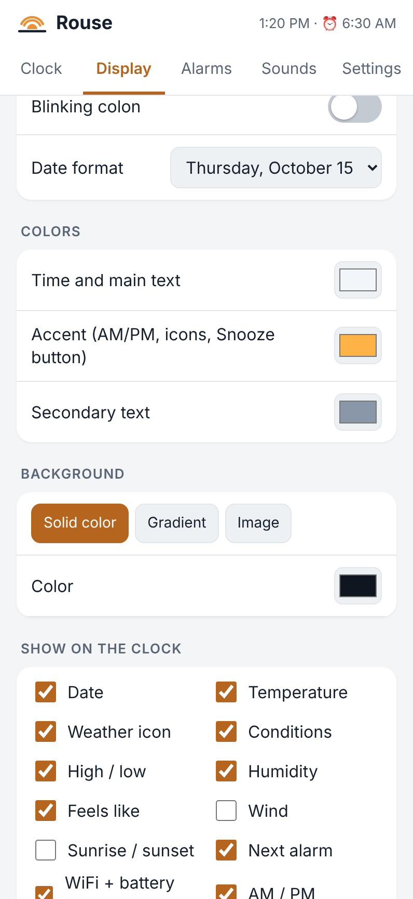
Photos
Set Background to Image to use a photo.
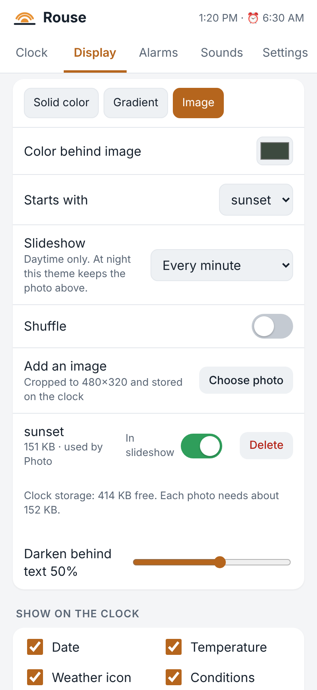
- Add an image → Choose photo picks a photo from your phone or computer. The page crops it to the clock’s screen (480 × 320) and stores it on the clock.
- Photo chooses which photo this theme shows.
- Darken behind text shades the photo behind the time and text so they stay readable.
- Below the list of photos, the page shows how much room is left. Each photo needs about 150 KB. The CYD has room for up to 3 photos; the Freenove and Waveshare for up to 64.
- Delete removes a photo from the clock. A theme that was using it switches to a gradient.
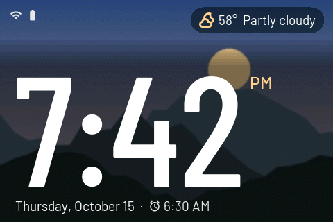
Slideshow
A photo theme can change photo by itself:
- Slideshow sets how often: every 10 seconds, 30 seconds, minute, 5 minutes or 15 minutes. Off keeps one photo.
- When the slideshow is on, the photo setting becomes Starts with: the photo it begins from.
- Shuffle shows the photos in random order; otherwise they go in order by name.
- In slideshow, beside each photo, leaves a photo out of the slideshow when turned off.
The slideshow runs only while the photo theme is your day theme. It pauses while an alarm rings or the menu is open. At night (even if the same theme is used at night) the clock keeps the Starts with photo, so a bright picture never appears at 3 a.m.
Sounds
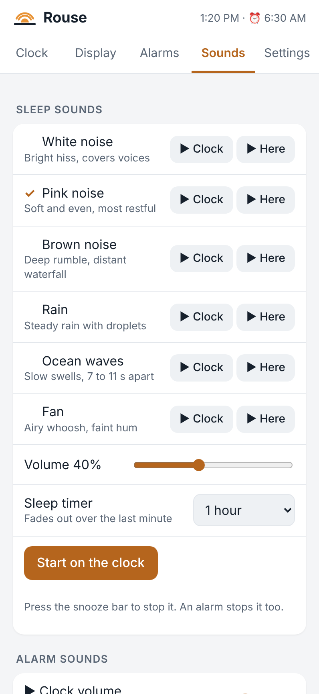
Sleep sounds
Rouse can play a soothing sound to help you fall asleep: White noise, Pink noise, Brown noise, Rain, Ocean waves or Fan.
- On the clock: tap the screen, tap Noise, choose a sound, and tap Start. Use − and + for the volume and Sleep timer for how long it plays.
- On the web page: Sounds → Sleep sounds has the same choices. ▶ Clock and ▶ Here let you listen first. Start on the clock starts it.
- The sound fades out over the last minute of the timer. All night plays until morning.
- Press the snooze bar to stop it. An alarm stops it too.
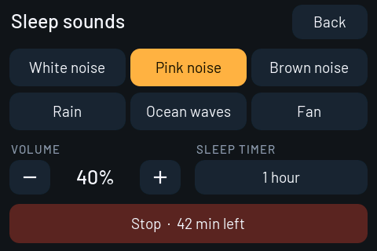
Alarm sounds
Rouse has eight built-in alarm sounds: Morning Chimes, Marimba, Gentle Rise, Harp, Birdsong, Classic Beep, Digital Alarm and Soft Bell. Sounds → Alarm sounds lets you listen to each one on the clock or on your phone. Clock volume sets the volume for these previews.
Your own sounds
You can add your own alarm sounds: a song, a rooster, anything.
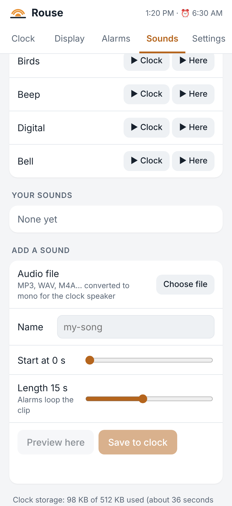
- Under Add a sound, tap Choose file and pick an audio file (MP3, WAV, M4A and most other formats).
- Give it a Name.
- Use Start at and Length to choose the part to keep (3 to 30 seconds). Alarms repeat the clip until stopped.
- Tap Preview here to listen, then Save to clock.
Your sounds appear under Your sounds and in every alarm’s sound list, marked (yours).
Hourly chime
Settings → Hourly chime plays a short sound on the hour. It stays silent during night mode.
Settings
Time
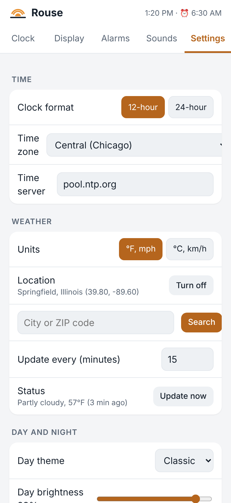
- Clock format. 12-hour or 24-hour.
- Time zone. Daylight saving time is handled automatically. (POSIX time zone and Time server are for unusual setups; leave them alone.)
The clock sets its own time over the internet. It keeps time through short WiFi outages.
Weather
- Units. °F and mph, or °C and km/h.
- Location. Search by town or ZIP code. Turn off hides the weather.
- Update every. How often the clock checks the weather.
- Status shows when the weather was last updated. Update now checks right away.
Weather comes from Open-Meteo, a free weather service. No account is needed.
Day and night
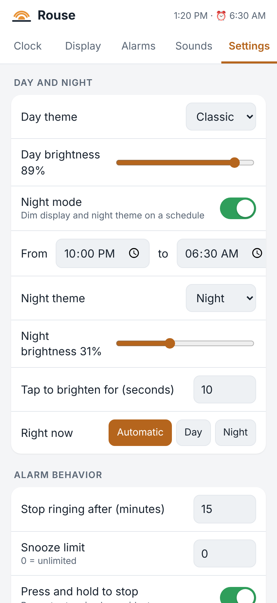
- Day theme and Day brightness.
- Night mode turns the schedule on or off; From and to set it.
- Night theme and Night brightness.
- Tap to brighten for. How long the screen brightens when tapped at night.
- Right now. Automatic follows the schedule. Day or Night overrides it until the schedule next changes over (so night mode switched off at 11 PM comes back on the following night).
Hardware
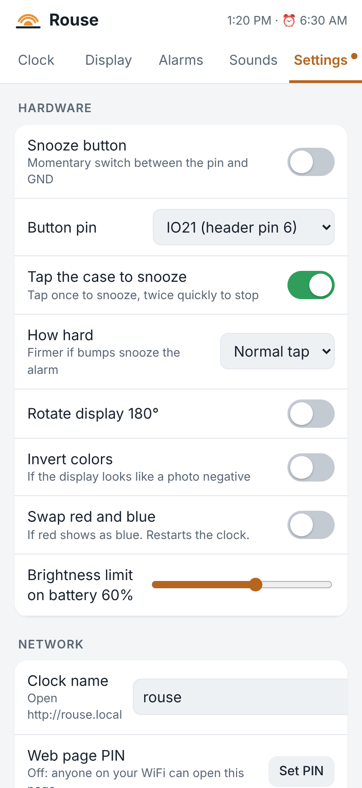
- Snooze button. Turn this on if your clock has a snooze bar. Button pin is the connection the snooze switches are wired to. The right one for your board is chosen already; change it only if the build guide told you to. The line under the switch shows whether the clock sees the button and when it was last pressed, which is handy for testing.
- Tap the case to snooze (Waveshare only). One tap snoozes, two quick taps stop (see Tapping the case). The line under the switch shows how hard your last tap was, which helps when choosing the next setting.
- How hard (Waveshare only). Gentle tap, Normal tap or Firm tap. Choose Firm tap if bumps of the nightstand snooze your alarm, Gentle tap if your taps aren’t noticed.
- Rotate display 180°. For a clock mounted upside down.
- Invert colors and Swap red and blue. For display boards whose colors look wrong (like a photo negative, or red showing as blue). You won’t need them on a clock that already looks right.
- Brightness limit on battery. During a power outage the screen is held to this brightness to make the battery last longer.
- Recalibrate touch (CYD only). If taps land in the wrong place, this shows targets to tap.
Network
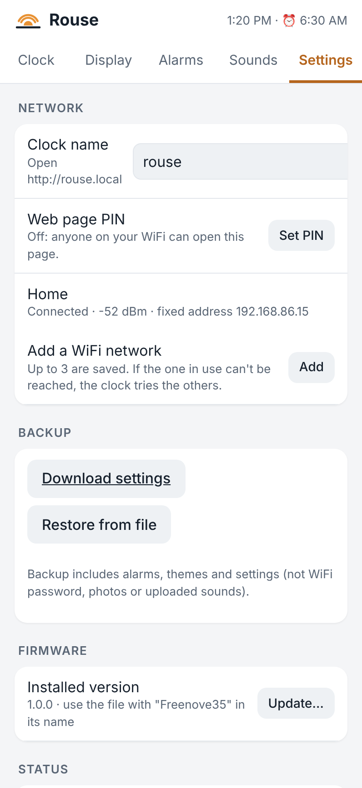
- Clock name. The clock’s web address: rouse means http://rouse.local. Changing it restarts the clock.
- Web page PIN. See below.
- WiFi networks. Up to three WiFi networks can be saved. If the one in use can’t be reached, the clock tries the others. Add looks for networks nearby.
The clock’s own Network & tools screen (tap the screen, then Network & tools) shows its address and signal, and can give it a fixed address, which avoids trouble on some routers.
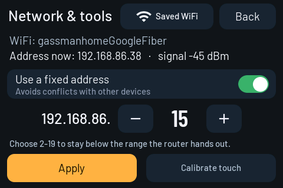
Web page PIN
Without a PIN, anyone on your home WiFi can open the clock’s web page and change its alarms. That is fine for most homes. If you’d like to keep it private, set a PIN:
- In Settings → Network → Web page PIN, tap Set PIN.
- Enter 4 to 8 digits and tap Save PIN.
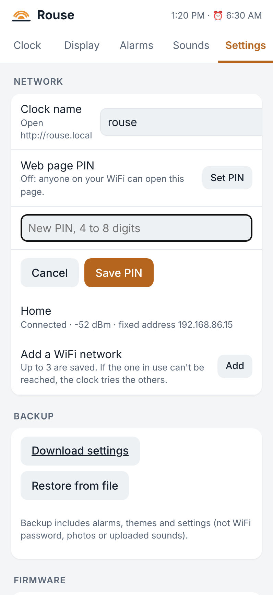
How it works:
- Each phone, tablet or computer asks for the PIN once, then stays signed in for a year, even when the clock restarts. The clock remembers up to eight devices.
- Changing the PIN signs out every other device; the one you changed it from stays signed in.
- The PIN protects everything on the page, including photos and firmware updates.
- After five wrong tries, the clock makes you wait a minute.
- The PIN is stored scrambled and is never included in a settings backup.
- Setting up a new clock (or one that has lost its WiFi) through its setup network never asks for the PIN.
- Turn off PIN removes it.
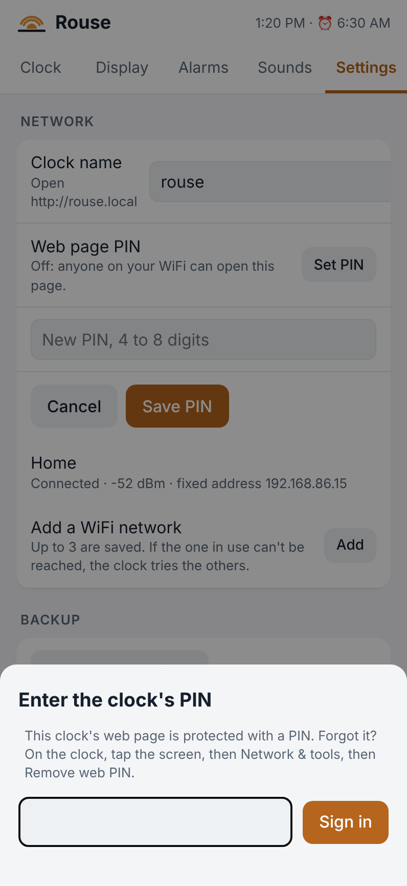
Forgot the PIN? On the clock, tap the screen, then Network & tools, then Remove web PIN. You have to be at the clock to do this, which is the point. Then set a new PIN in the web page.
Backup
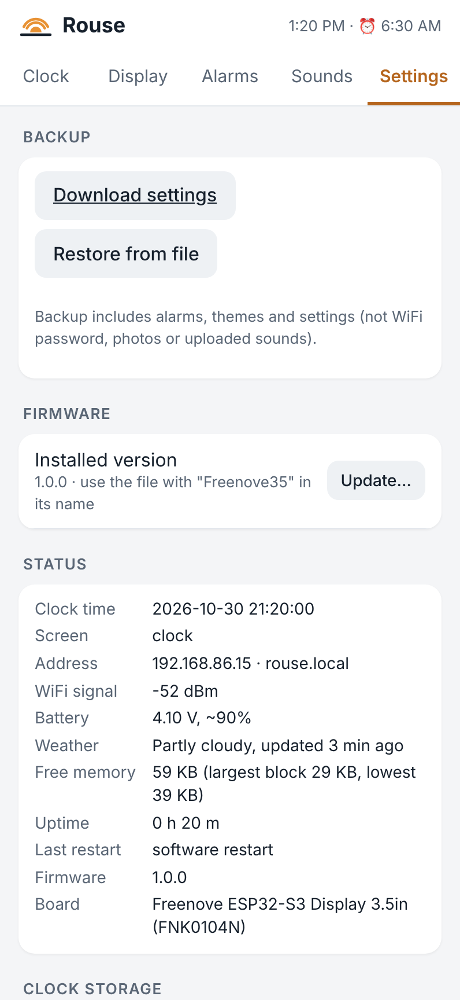
Download settings saves your alarms, themes and settings to a file; Restore from file puts them back, for example after a factory reset or onto a second clock. The backup does not include WiFi passwords, the PIN, photos or your own sounds.
Updating the firmware
New versions of Rouse add features and fix problems. Updating takes less than a minute and keeps all your settings, photos and sounds.
Installing an update from the web page
When you open the clock’s web page, it checks rouseclock.com for a newer version for your board. If there is one, a dot appears on the Settings tab, and Settings → Firmware shows Update available, with a line about what’s new and a What’s new link to the full list of changes on rouseclock.com.
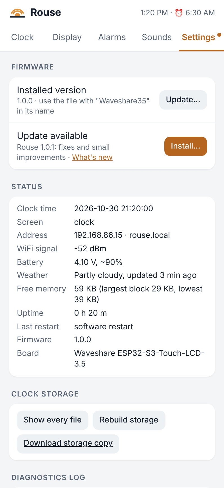
- Tap Install… and confirm. Nothing is installed until you do.
- The page downloads the update from rouseclock.com and passes it to the clock. Keep the clock plugged in and the page open; the clock restarts by itself when done.
The check is made by your phone or computer, not the clock: an ordinary web request to rouseclock.com, with nothing about you or your clock in it. If the download doesn’t work (no internet on that device, for example), the page links to the downloads page instead: use the steps below.
Installing a file yourself
- Download the new firmware file for your board. Each release has one file per board, with the board’s name in the file name: CYD, Freenove35 or Waveshare35. Settings → Firmware reminds you which one your clock needs.
- In Settings → Firmware, tap Update… and choose the file.
- Keep the clock plugged in. A progress bar shows the upload; the clock restarts by itself when done.
If you pick the wrong file, the clock refuses it and says which file it needs. Nothing is changed.
The very first install on a new board is done over USB from a computer, as described in the build guide. After that, every update goes through the web page.
Troubleshooting
The clock shows “WiFi setup” again. It started up and couldn’t reach any saved WiFi network for a minute: the router may be off, or its name or password changed. Join the clock’s Rouse- network with your phone and choose your WiFi again (see First setup). If the router was only restarting, the clock also keeps trying your saved networks in the background.
rouse.local doesn’t open. Some phones and networks don’t support .local names. Use the number address shown at the bottom of the clock’s menu instead. Make sure your phone is on the same WiFi as the clock, not on mobile data or a guest network.
I want to move the clock to a different WiFi network. Before you move it, go to Settings → Network, tap Add, and enter the new network (it can be saved even when it’s out of range). If you’ve already moved it, unplug the clock and plug it back in: when it can’t reach any saved network for a minute after starting, it opens its Rouse- setup network again.
I forgot the web page PIN. On the clock: tap the screen, Network & tools, Remove web PIN.
Touches land in the wrong place (CYD). Tap the screen, Network & tools, Calibrate touch, and tap each target as it appears. A stylus or fingernail works best.
The alarm is too quiet. Raise the alarm’s Volume, turn on Extra loud, or both. Test with ▶ Clock.
The screen is too bright at night. Lower Night brightness, and choose a night theme with dark colors (the built-in Night theme is made for this).
The weather says “Updating…” for a long time. Check the location in Settings → Weather, then tap Update now. The weather needs a working internet connection.
The clock seems stuck. Press a paperclip gently into the RESET hole on the back. Your settings are kept.
Something isn’t working right. Settings → Diagnostics log shows what the clock has been doing. Copy log copies it so you can send it along when asking for help.
Start over. Settings → Factory reset erases all alarms, themes and settings and restarts the clock. It stays connected to your WiFi, and your photos and sounds stay on the clock. Download a backup first if you might want your settings back.
Specifications
| CYD | Freenove | Waveshare | |
|---|---|---|---|
| Board | ESP32 3.5” display (E32R35T) | Freenove FNK0104N | Waveshare ESP32-S3-Touch-LCD-3.5 |
| Screen | 3.5” 480 × 320 | 3.5” 480 × 320 IPS | 3.5” 480 × 320 IPS |
| Touch | Pressure-sensitive (stylus) | Glass, finger | Glass, finger |
| Room for photos | up to 3 | up to 64 | up to 64 |
| Touch calibration | Yes | Not needed | Not needed |
| Snooze | Snooze bar (optional) | Snooze bar (optional) | Tap the case |
| Firmware file name | …-CYD-… | …-Freenove35-… | …-Waveshare35-… |
All three:
- WiFi: 2.4 GHz.
- Power: USB-C, 5 V.
- Backup battery: optional. On the CYD, a 1100 mAh battery runs the clock for about 7½ hours, and a 2000 mAh one about twice as long; other boards may draw a little more.
- Alarms: up to 10. Themes: up to 10. Saved WiFi networks: up to 3.
- Internet services: time (NTP time servers) and weather (Open-Meteo). Nothing else leaves your home network, and no account is needed.